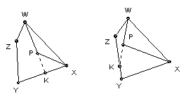
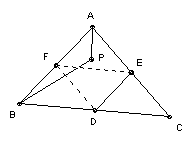

P is a point inside the triangle ABC. k = min(PA, PB, PC). Show that k + PA + PB + PC ≤ AB + BC + CA.
Solution

We show that if P lies inside a convex quadrilateral WXYZ, then WP + PX < WZ + ZY + YX. This is almost obvious because the path WZYX lies outide the path WPX. But to prove it note that the line WP must intersect the segment XY or the segment YZ. Suppose first it intersects the segment XY at K. Then WZ + ZY + YX = (WZ + ZY + YK) + KX > WK + KX = WP + (PK + KX) > WP + PX. Alternatively, if it intersects YZ at K, then WZ + YC + YX = (WZ + ZK) + KY + YX > WK + KY + YX = WP + (PK + KY + YX) > WP + PX.

Now let D, E, F be the midpoints of BC, CA, AB respectively. Suppose P lies inside ABDE. Then PA + PB < BD + DE + EA = (AB + BC + CA)/2. But P must lie inside at least two of ABDE, BCEF, CAFD. So if it lies inside the first two, we get PA + PB + PB + PC < (AB + BC + CA). Similarly, for each of the other two we get (PA + PB + PC) + (one of PA, PB, PC) < (AB + BC + CA). So in any case (PA + PB + PC) + min(PA, PB, PC) < (AB + BC + CA).

© John Scholes
jscholes@kalva.demon.co.uk
10 Oct 2002
Last corrected/updated 22 Oct 2002